Concept
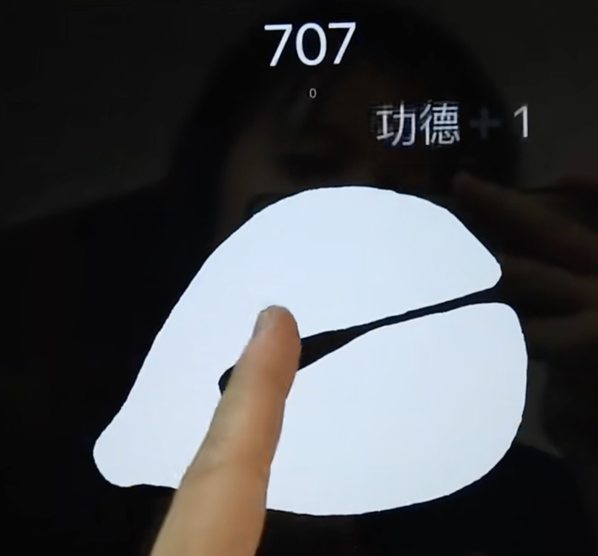
I'm inspired by the a popular trend in China where people use digital wooden fish on mobile devices to try
to improve their mental health. There have been mobile apps developed for this purpose, such as this one. The original wooden fish is
a type of instrument and is used to increase one's merit in buddhism while nowadays some young people in
China online treat it as something to calm their minds down to peace during this difficult time. I was
thinking to make a physical version for myself with the similar purpose. 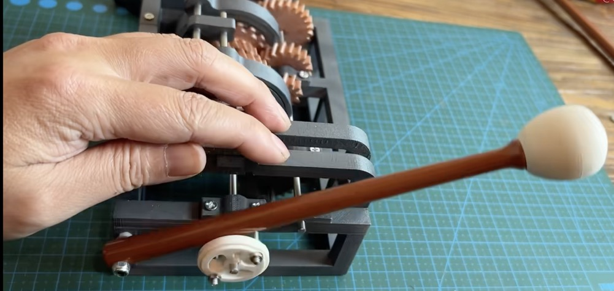
I found this video where this person made a physical version of an automated wooden fish that can knock by itself with different speeds. I was inspired by the design of how to control the movement of the wooden fish and I decided to design a manual version. Here's the concept sketch:
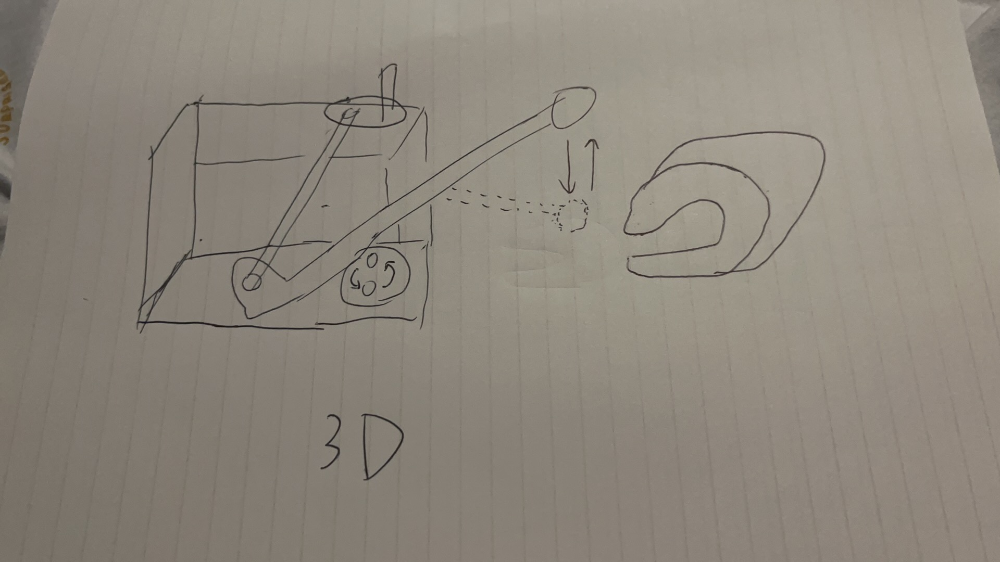
Planned & Out of planned
| # | Tasks | Plan to finish By | Contingency Plan | IN REAL LIFE |
|---|---|---|---|---|
| 0 | Casting the wooden fish | Nov 19th (DONE already) | N/A | Nov 19th (DONE already) |
| 1 | CAD Modelling & Grasshopper Script | Nov 22nd | N/A | Nov 21st (ahead of plan) while also changed the plan from separated drum-box and bell to a
box including both the drum and the bell. 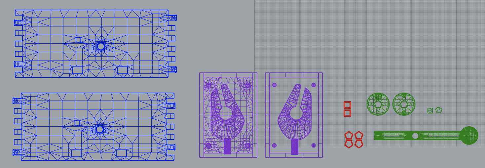 |
| 2 | Laser Cutting (parallel with 3d printing - test print) | Nov 30th | 3D print the box rather than using pieces of laser cutted boards to build the box | Nov 30th (on time), while the 5 pieces failed to form a box because of miscaculation for 2
out of 5 pieces. I ended up finishing the updated 2 pieces using 3d printing mainly because
of the lack of access to a laser cutter. 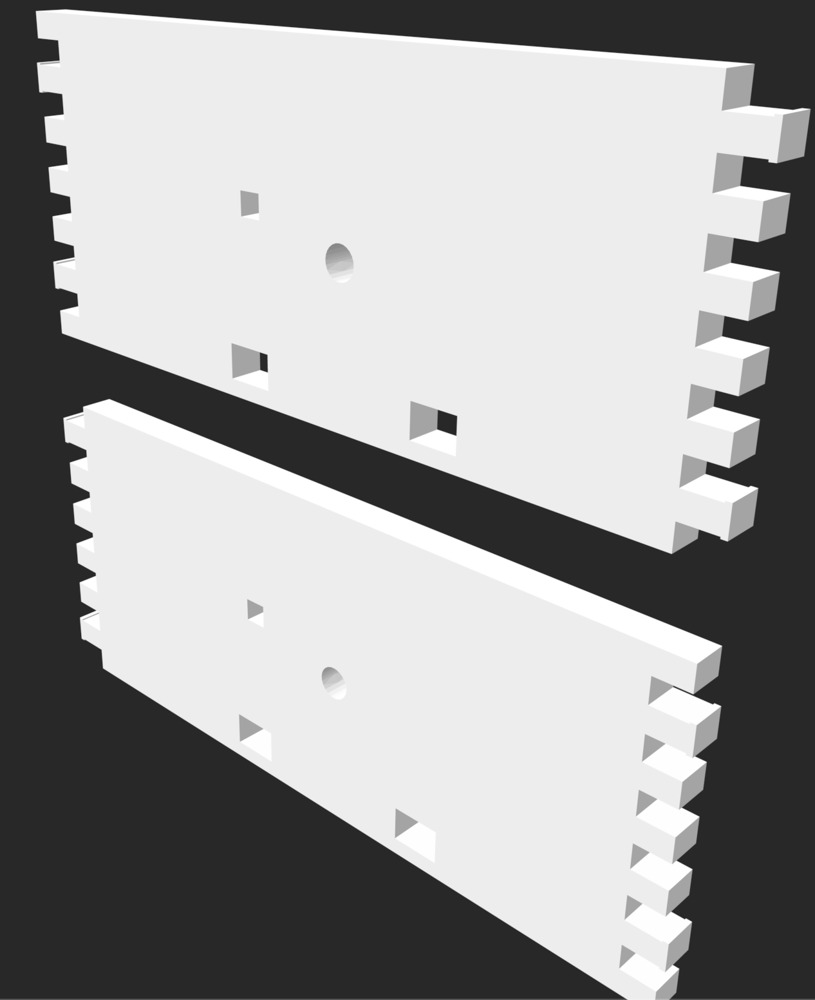 |
| 3 | 3D Printing - test print (parallel with Laser Cutting printing) | Nov 30th | Go back to CAD Modelling and modify models | Dec 1st (delayed), as I ended up spending more iterations of testing than expected. |
| 4 | 3D Printing | Dec 4th | N/A | Dec 3rd (ahead of time), I was able to use parts of the test prints even though there were extra 2 pieces of the box that needed to be printed. |
| 5 | Documentation (parallel with 3D Printing) | Dec 4th | N/A | Dec 5th (delayed), the documentation took me way longer than I expected. |
| 6 | Finishing Assembling | Dec 6th | N/A | Dec 4th (on time), I was able to finish assembling as soon as all pieces were printed out. |
Steps
1. Casting (DONE in Assignment6)
I used Rhino to build the molds for the woodenfish's molds first. I used commands mainly around polysurfaces instead of meshes, such as BooleanDifference, mainly because the troubles brought by involving meshes too early in the stage. Then I mixed around 180g in total of Oomoo 30 to get the silicone mold for the woodenfish. As the final step, I mixed 60g of hydrostone and 20g of water and pour into the silicone mold to cast the "hydrostone-fish".
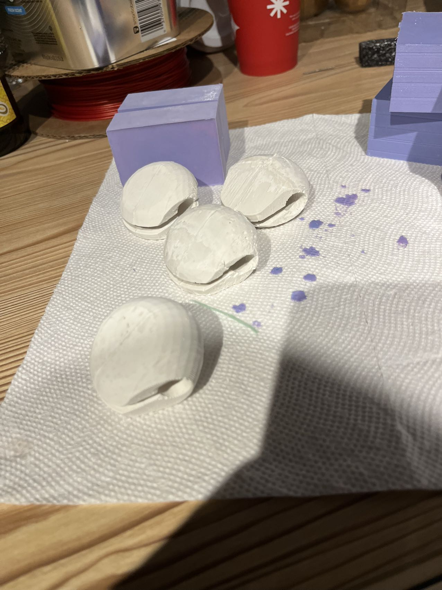
2. CAD Modelling
Here are all the parts that I ended up building models and 3d printing:
- Handler (green)
- Drum (green)
- Lever (green)
- Square Stick (green)
- Pentagon Stick (green)
- Holders (red)
- 2 pieces of the box (blue)
- Mold for woodenfish's mold (purple)
I started with calculating the size of the box based on the casted bell and the size of the drum required to hit it. The lever needs to make the drum drop from 3 cm above to hit the bell to make sounds. As a result, the distance between the stick to fix the drum and the lever is 2cm. The length of the drum is 10cm.
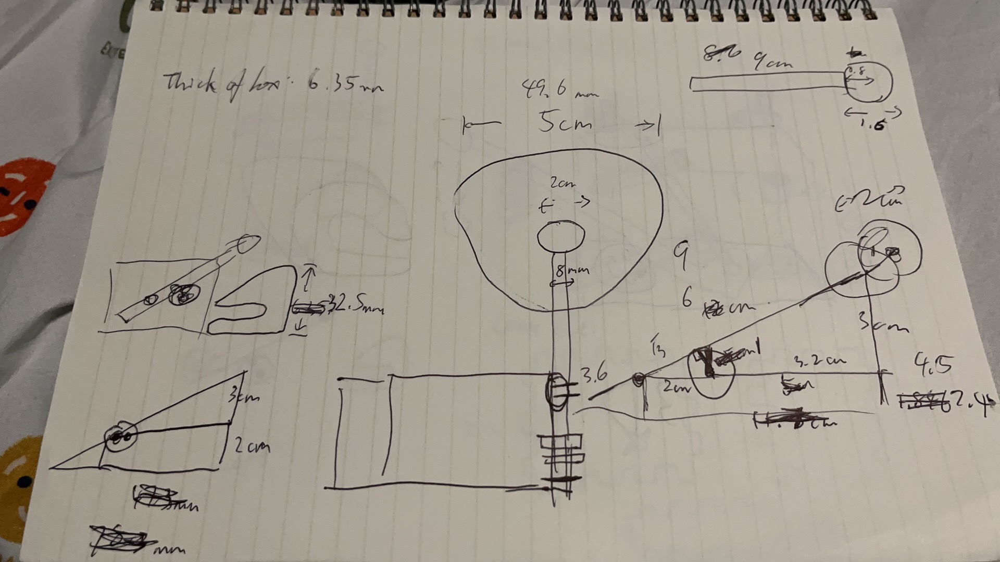
Based on the calculation, I was able to figure out the size of the box that would be laser cutted out of 2D design. I followed this guide to build a grasshopper script that can generate 4 pieces of jagged boards that implemented the interference fits to build a box. After those 4 pieces were baked, I made the fifth piece based on them and also made several holes on them where I could use sticks to fix the drum and the lever later.
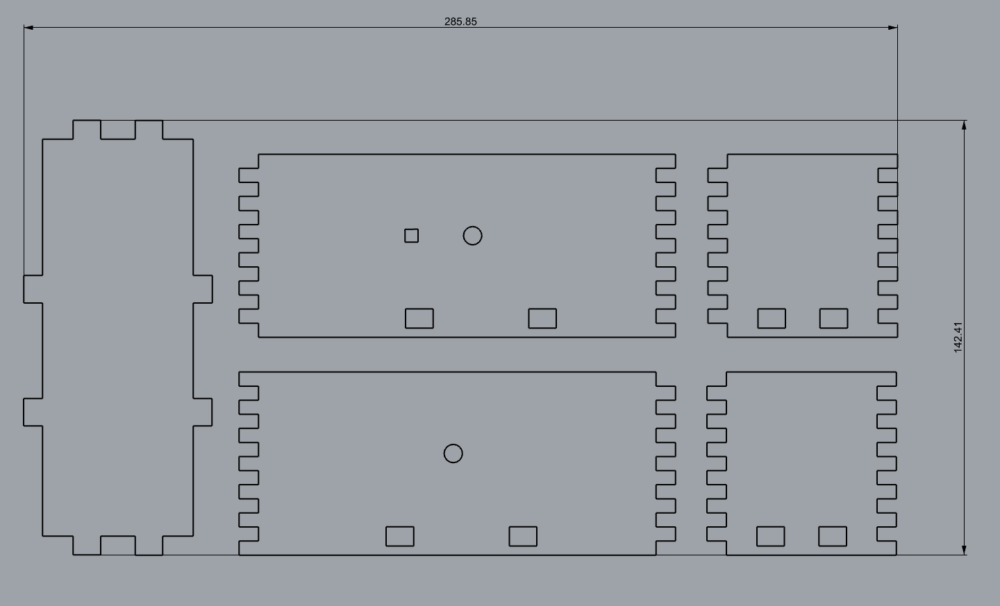
For other parts of system, I started with small parts to test print and iterated the models for 3d printing multiple times. The initial idea was to have the handler and the lever fit closely with the pentagon stick while have the drum hanging by the square stick loosely. Because of the inaccuracy of the 3d printing, I ended up adjusted multiple times to have the fitted sizes. However, the fixation was not strong enough to let me keep the lever rolling with the handler. As a result, I added 4 more pentagon-shaped "holders" to keep them fit with the stick and the box closely and 2 more square-shaped "holders" to keep the drum inside the center of the box.
3. Laser cutting
I had the 5 pieces of the box laser cutted using acrylic borads with 6.35 mm thickness. However, because of the miscalculation for two out of five pieces, the box cannot get pressed and fit closely. I ended up with redesigned the two pieces and had them 3d printed which would be shown later.4. 3D printing
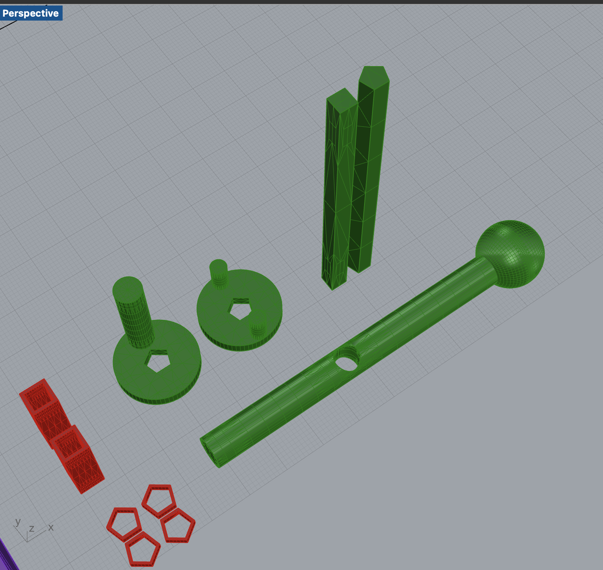Based on the test prints, I adjusted models severl times and had all required pieces of the system 3d printed, together with additional 2 pieces of the box.
5. Assembling
With all the pieces ready, I started assembling them together as shown in the pictures: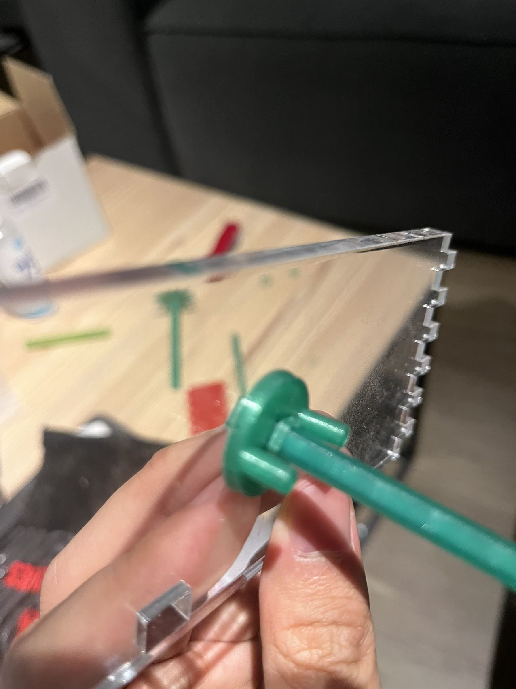
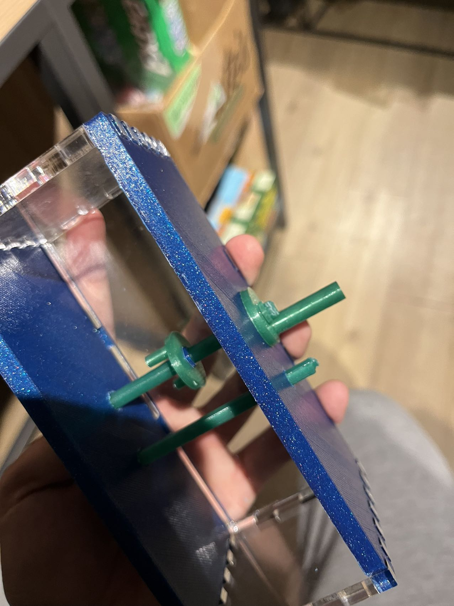
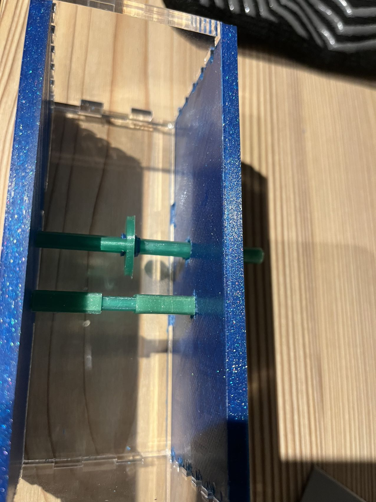
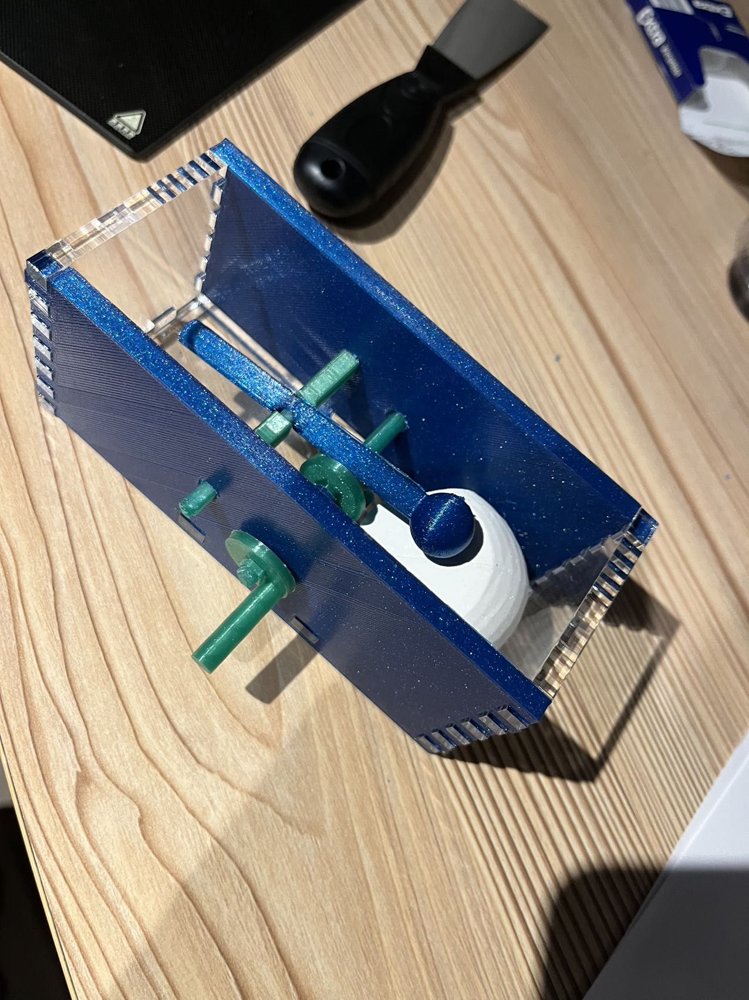
Source Files
| # | Name | Type | File |
|---|---|---|---|
| 1 | Mold for Woodenfish's Mold | 3D printing | mold.stl |
| 2 | Mechanical parts | 3D printing | necessary.stl |
| 3 | 5 pieces to form the box | 2D laser cutting | lasercut.ai |
| 4 | 2 pieces to form the box (alternative) | 3D printing | boards.stl |
| 5 | Grasshopper to generate 4 pieces of the box initially | Grasshopper | 4Pieces.gh |
Bill of Materials
| # | Name | Detail | Image |
|---|---|---|---|
| 1 | (Required) Acrylic boards | Thick: 6.35 mm, Width*Height: 285.85mm * 142.41mm | 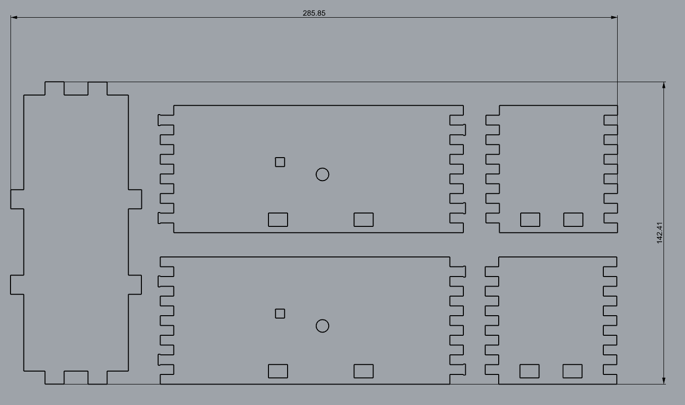 |
| 2 | (Required) Filament for 3d printing | 13g for necessary parts | 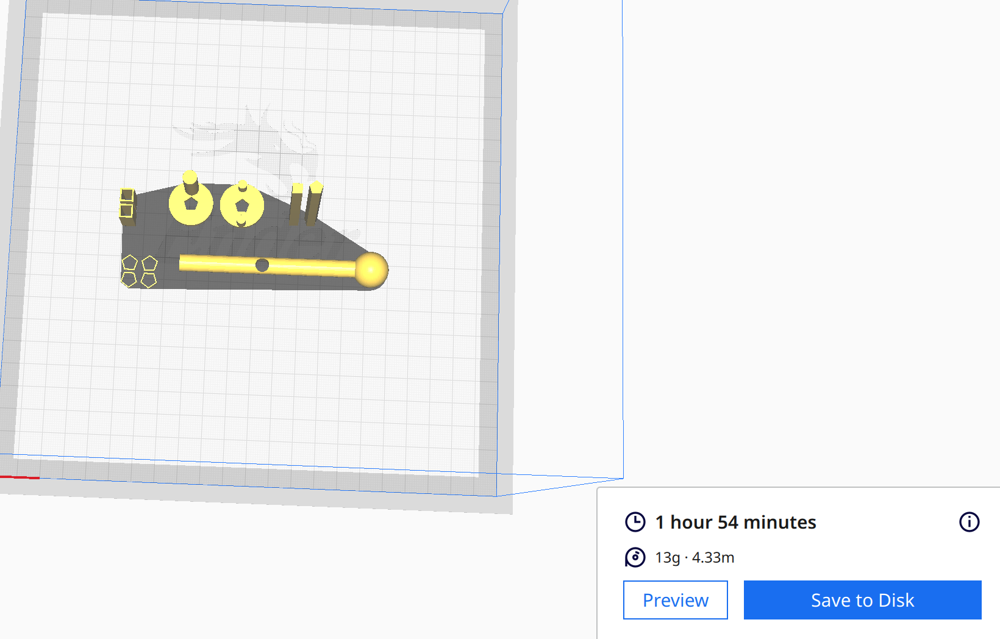 |
| 3 | (Option1) Filament for 3d printed mold for woodenfish's mold | 75g for the mold for woodenfish's mold | 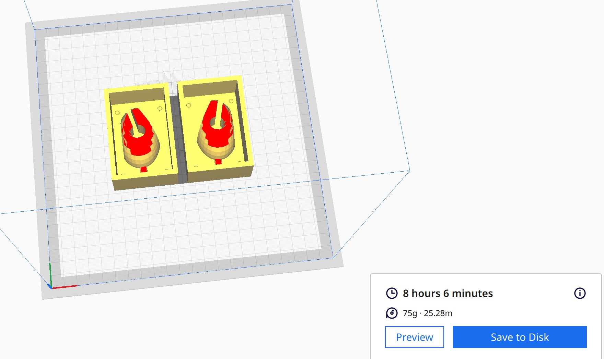 |
| 4 | (Option1) Silicone Mold for woodenfish's mold | Around 180g in total for woodenfish's mold | |
| 5 | (Option1) Hydrostone Wooden Fish | 60g Hydrostone mixed with 20g water for each | |
| 6 | (Option2 - Recommended) Filament for 3d printed woodenfish | 22g for 3d printed woodenfish | 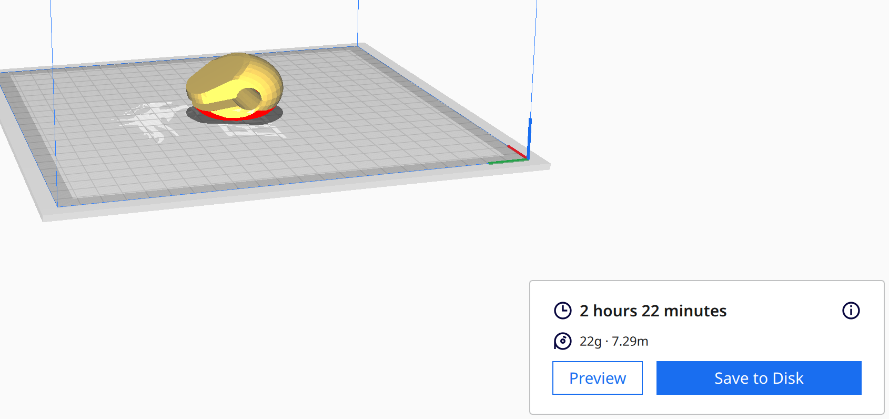 |
Special thanks to @Kefeng Wang who help me with Rhino.